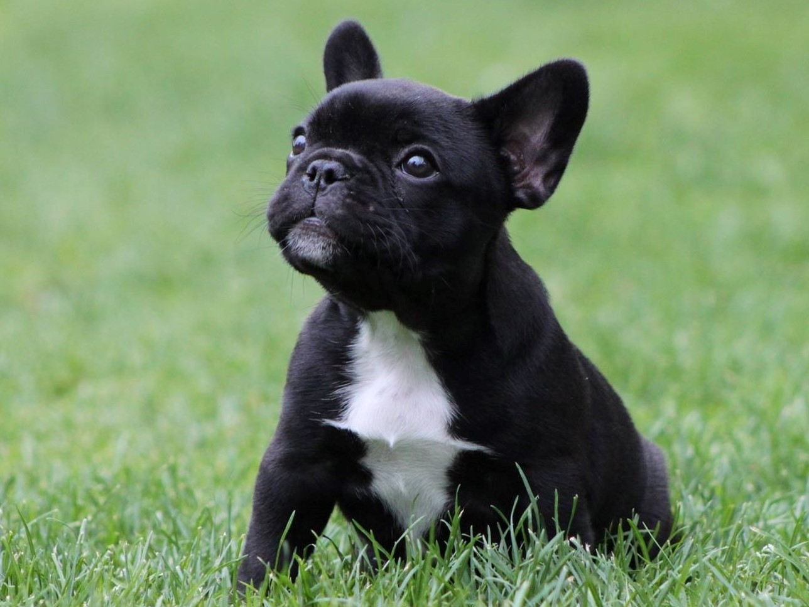

Är en fransk bulldogg den rätta hundrasen för dig? Här är lite information om franska bulldoggs du borde fundera över innan du adopterar en fransk bulldogg från en av våra adoptioncentrum.
Franska bulldoggs passar ägare utan erfaranhet men det betyder inte att dem är enkla att ta hand om. De kräver grundläggande träning och pälsvård 1 gång i veckan. Dem kan även behöva träing för för att bo med barn, katter eller andra hundar. Franska bulldoggs är inte allergivänliga. Franska bulldoggs är vakthundar, de skäller och varnar men förrutom det är dem tysta. Franska bulldoggs är lugna och kräver därför mindre motion och går på lugnare promenader.